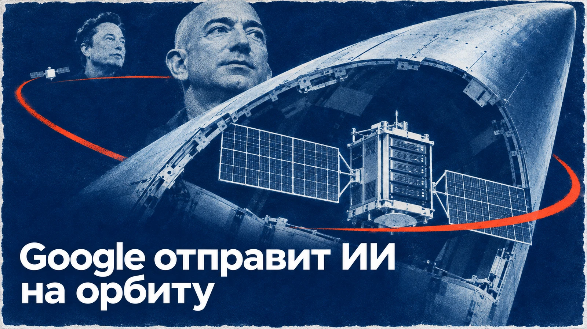

Новости Google и Google DeepMind, где компания выступает непосредственным участником события.
Продукты компании
27 ноября 2026

26 ноября 2026

25 ноября 2026

24 ноября 2026

Google устроила научные конференции для нейросетей
Новости ИИКоманды ИИ-агентов Gemini на виртуальных конференциях совместно улучшали алгоритмы для квантовых компьютеров, а корректность решений проверяли математически.

Поисковик Google теперь сможет заглянуть в ваш кошелёк
Новости ИИGoogle начала подключать Wallet к AI Mode: поисковый ИИ с разрешения пользователя сможет анализировать расходы и бонусы банковских карт. Доступ только на чтение.
23 ноября 2026

Google доверила Безосу запуск космических ИИ-серверов после испытания с Маском
Новости ИИGoogle заключила соглашение с Blue Origin о запуске спутников Project Suncatcher на New Glenn в первом квартале 2029 года. Каждый аппарат получит вычислительные мощности масштаба серверной стойки.

Google научила ИИ делать Android-приложения, которые вас помнят
Новости ИИGoogle AI Studio получила интеграцию Firebase для Android-приложений: облачное хранение, вход через Google и защищённый доступ к Gemini. Установка через личную библиотеку Google Play доступна в США.
21 ноября 2026

Signal запретил скриншоты, чтобы Siri и Gemini не читали ваши переписки
Новости ИИSignal усилил защиту переписок от системных ИИ-помощников: блокировка захвата экрана на iPhone и Android, ручные исключения Siri на Mac.

Google пустила Gemini за ваш Mac: ИИ сам работает в программах, пока вы заняты
Новости ИИGoogle начала открывать платным подписчикам в США функцию Computer Use в Gemini для Mac: ИИ управляет разрешёнными приложениями в отдельном виртуальном окне и требует подтверждения чувствительных действий.
20 ноября 2026

Google открыла Genie 4: меняйте погоду и населяйте виртуальные миры одной фразой
Новости ИИGoogle открыла Genie 4 подписчикам AI Ultra и разработчикам: пользователи исследуют интерактивные миры и меняют окружение текстовыми командами на ходу. Среди новых демонстраций — муравьиная колония The Life of Ants.

Anthropic провела крупнейшее IPO в истории — $81 млрд. А Nasdaq всё равно упал на 2,3%
Новости ИИAnthropic провела IPO на $81,34 млрд, крупнейшее размещение акций в истории. После первоначального скачка котировки снизились, а индекс Nasdaq потерял за день 2,25%.
19 ноября 2026

ИИ ищет лекарства от рака. Инвесторы вложили $5 млрд
Новости ИИIsomorphic Labs привлекла $5 млрд на разработку лекарств с ИИ спустя полгода после раунда на $2,1 млрд. Её программы в онкологии и иммунологии пока находятся на доклинической стадии.

Google выпустила Gemini 4 Neon: обогнала Claude Opus 5.5 и GPT-6.2 Sol в тестах
Новости ИИGoogle представила Gemini 4 Neon для программирования и задач ИИ-агентов. В Artificial Analysis модель набрала 61 балл; Google сравнивает её стоимость выполнения задач с Gemini 4 Carbon.

Google сделала ИИ-исполнителя бесплатным: он сам звонит в компании и оформляет покупки
Новости ИИGoogle начала бесплатно открывать Tasks in Gemini в шести странах. В США агент может обзванивать компании и готовить покупки с подтверждением владельца.
18 ноября 2026

Google открыла Gemini 4 Carbon платным пользователям и показала «рой» ИИ-агентов
Новости ИИGoogle расширила доступ к Gemini 4 Carbon: платный API, корпоративные клиенты и подписчики AI Ultra. Показала экспериментальный /swarm, объявила цены до и после 30 ноября.

Google обнаружила ИИ-хакера, который превращает исправления программ в новые атаки
Новости ИИИсследователи Google и Mandiant обнаружили exploit_agent — автоматизированную систему поиска и эксплуатации уязвимостей, а также похищенные данные на открытом сервере злоумышленников.

OpenAI выпустила GPT-6.2 Astra и Sol: новая Astra почти догнала Claude
Новости ИИOpenAI выпустила GPT-6.2 Astra и Sol. Astra почти догнала Claude Fable 5.2 по общему индексу Artificial Analysis, Sol показала низкую стоимость заданий в FrontierCode 2.0.

Google Карты научились звонить в салоны и искать свободную запись. ИИ выходит в 30 стран Европы
Новости ИИGoogle расширила возможности Ask Maps: поиск свободной записи с помощью звонков компаниям, планирование путешествий и проверка сохранённых мест. Сам Ask Maps запускается ещё в 30+ странах Европы, а обзвон компаний пока доступен в США.